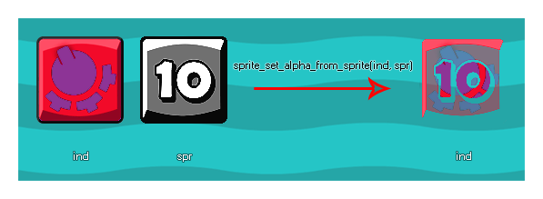

sprite_set_alpha_from_sprite(ind, spr);
Streit Beschreibung ind Der Index des Sprites zum Ändern der Transparenzkarte von. spr Der Index des Sprites, von dem die Transparenzkartendaten übernommen werden sollen.
N/A
Diese Funktion verwendet den Wert / die Sättigung eines Sprites und multipliziert es mit dem Alpha des Ziel-Sprites. Idealerweise sollte das Sprite, das zum Erzeugen der neuen Alpha-Map verwendet wird, Graustufen sein, wobei die weißen Bereiche einen äquivalenten Alpha-Wert von 1 (undurchsichtig) haben, die schwarzen Bereiche Alpha 0 (transparent) entsprechen und die grauen Bereiche ein Alpha-In zwischen 0 und 1. Das Sprite, für das Sie das Alpha festlegen, kann weder eine permanente Ressource sein, noch kann das Sprite, mit dem Sie das Alpha festlegen, verwendet werden, da dies zu einem Fehler führt. Dies bedeutet, dass Sie zwei völlig neue Sprites "on the fly" erstellen müssen, damit die Funktion korrekt funktioniert. Dies kann durch die Verwendung von Oberflächen oder durch Erstellen eines Sprites auf dem Bildschirm erreicht werden (das Codebeispiel unten zeigt, wie der Effekt mit Oberflächen erzielt werden kann).
HINWEIS: Diese Funktion ist nur für Bitmap- Sprites und nicht für SWF- oder JSON (Spine) -Sprites geeignet.
Unten ist ein Bild, das zeigt, wie diese Funktion funktioniert: 
In diesem erweiterten Beispiel zeigen wir, wie Sie aus zwei Sprite-Ressourcen ein Spezialeffekt-Sprite erstellen können. Zu Beginn benötigen wir eine Controller-Variable im Create Event der Instanz. Diese Variable soll sicherstellen, dass das Sprite nur einmal erstellt wird:
spr_create = true;
Sobald das erledigt ist, müssen wir dann zum Draw Event gehen und diesen Code hinzufügen:
if spr_create
{
spr_create = false;
var surf, spr;
surf =
surface_create(sprite_get_width(spr_Explosion_Alpha),
sprite_get_height(spr_Explosion_Alpha));
surface_set_target(surf);
draw_clear_alpha(c_black, 0);
draw_sprite(spr_Gradient, 0, 0, 0);
sprite_index = sprite_create_from_surface(surf,
0, 0, sprite_width, sprite_height, false, false,
sprite_get_xoffset(spr_Gradient),
sprite_get_xoffset(spr_Gradient));
draw_clear_alpha(c_black, 0);
draw_sprite(spr_Explosion_Alpha, 0,
sprite_get_xoffset(spr_Gradient),
sprite_get_xoffset(spr_Gradient));
spr = sprite_create_from_surface(surf, 0, 0,
sprite_width, sprite_height, false, false,
sprite_get_xoffset(spr_Gradient),
sprite_get_xoffset(spr_Gradient));
surface_reset_target();
surface_free(surf);
sprite_set_alpha_from_sprite(sprite_index,
spr);
sprite_delete(spr);
}
draw_sprite(sprite_index, 0, x, y);
Der obige Code prüft zuerst, ob die Steuervariable wahr ist oder nicht, und wenn dies der Fall ist, führt er den Code zum Setzen des Sprite-Alphas aus und setzt die Variable auf false, um zu verhindern, dass der Code mehr als einmal ausgeführt wird. In diesem Fall erstellt es eine Oberfläche mit der Größe der Alphamaske, die wir verwenden möchten, und zeichnet dann das Sprite, dessen Alpha geändert werden soll, auf die Oberfläche und erstellt daraus ein neues Sprite, das als das Symbol zugewiesen wird sprite_index des Objekts. Der Code löscht dann die Oberfläche und zeichnet das Alpha-Map-Sprite darauf und erstellt ein weiteres neues Sprite, das seinen Index in einer lokalen Variablen speichert. Schließlich erhält das neue Sprite, das dem Objekt zugewiesen wurde, seinen Alpha-Satz von diesem temporären Sprite, die Oberfläche wird freigegeben und das temporäre Sprite wird entfernt.
Hier ist eine letzte Sache zu tun, und das ist das Entfernen des Sprites, das für das Objekt aus dem Speicher erstellt wurde, wenn es nicht verwendet wird. Dies würde entweder im Destroy Event oder im Room End Event wie folgt geschehen:
sprite_delete(sprite_index);